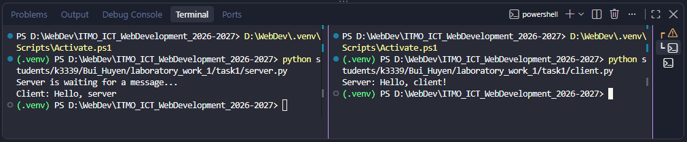
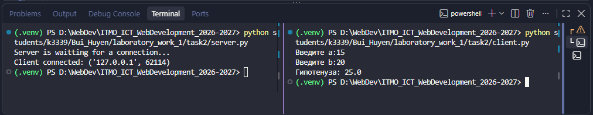
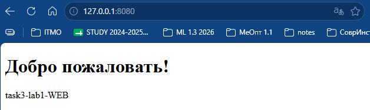
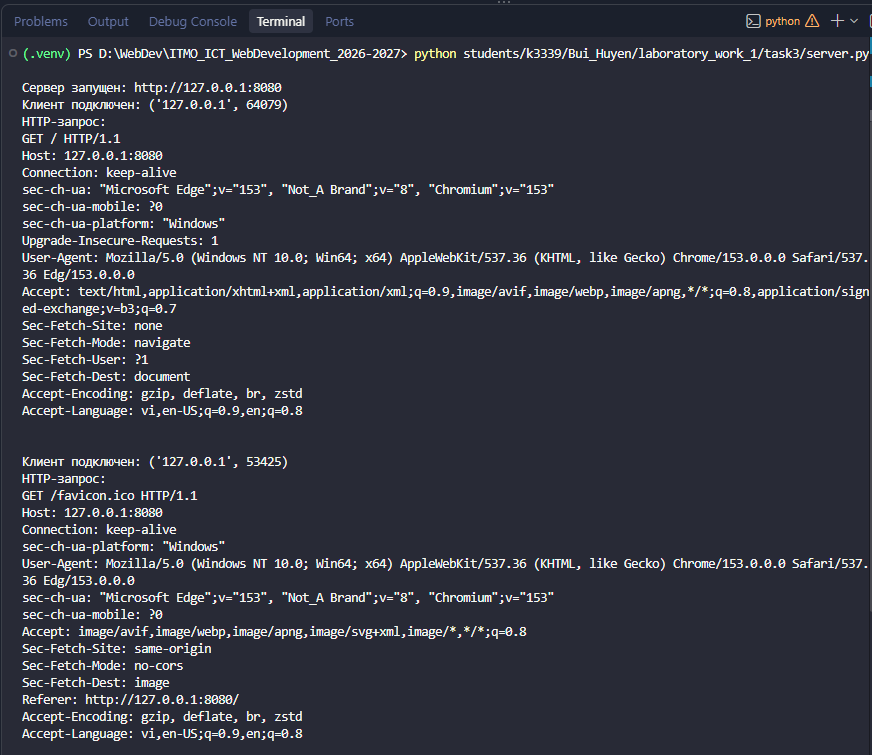
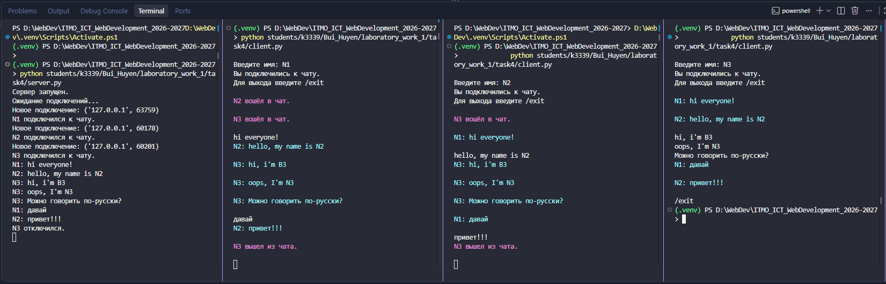
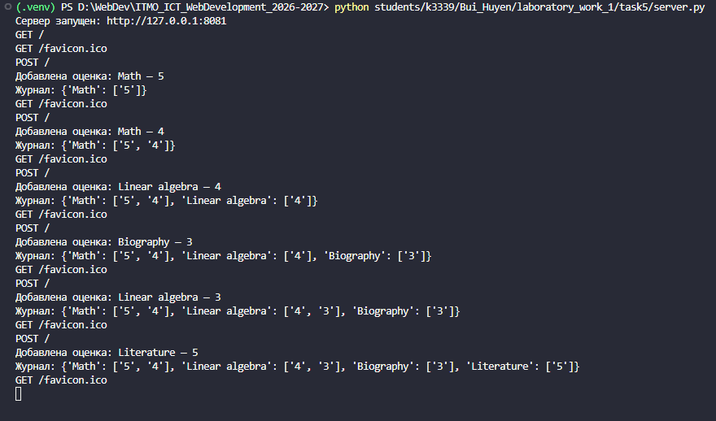
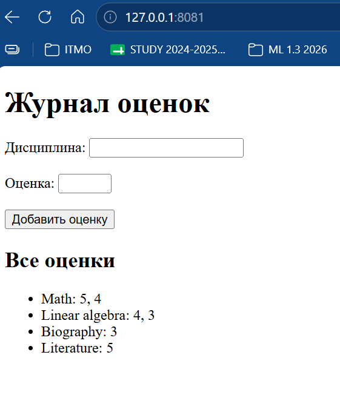

Отчёт лабораторной работы №1
Цель работы
Понять принципы межсокетного взаимодействтия в вебе. Научиться реализовывать базовую архитектуру клиент-сервер.
Задание 1. Обмен сообщениями по UDP
Описание протокола
В первом задании используется протокол UDP. Он не требует предварительного установления соединения между клиентом и сервером. Клиент отправляет сообщение на IP-адрес и порт сервера, а сервер получает сообщение вместе с адресом отправителя.
В программе сервер ожидает сообщение Hello, server!, выводит его в терминал и отправляет клиенту ответ Hello, client!.
Реализация
Сервер создаёт UDP-сокет и привязывает его к адресу 127.0.0.1 и порту 5000. После этого он ожидает сообщение от клиента с помощью recvfrom(). Полученное сообщение декодируется и выводится в терминал.
Клиент отправляет серверу сообщение Hello, server! с помощью sendto(). Сервер получает адрес клиента и отправляет по этому адресу ответ Hello, client!. После получения ответа клиент выводит его в терминал.
Код сервера
import socket
HOST = "127.0.0.1"
PORT = 5000
# UDP сокет
server_socket = socket.socket(socket.AF_INET, socket.SOCK_DGRAM)
# Привязываем сокет к адресу и порту
server_socket.bind((HOST, PORT))
print("Server is waiting for a message...")
# Получаем данные
data, client_address = server_socket.recvfrom(1024)
message = data.decode()
print('Client:', message)
# Ответим клиенту.
response = "Hello, client!"
server_socket.sendto(response.encode(), client_address)
server_socket.close()
Код клиента
import socket
HOST = '127.0.0.1'
PORT = 5000
# UDP сокет
client_socket = socket.socket(socket.AF_INET, socket.SOCK_DGRAM)
message = 'Hello, server!'
client_socket.sendto(message.encode(), (HOST, PORT))
# Получаем результат от сервера
data, server_address = client_socket.recvfrom(1024)
response = data.decode()
print("Server:", response)
client_socket.close()
Результат работы
После запуска сервера клиент отправляет ему сообщение. Сервер получает сообщение и отправляет ответ клиенту.

Задание 2. Вычисление по теореме Пифагора через TCP
Описание протокола
В данном задании используется протокол TCP (Transmission Control Protocol). В отличие от UDP, перед передачей данных TCP устанавливает соединение между клиентом и сервером.
Сервер создаёт сокет, привязывает его к определённому IP-адресу и порту и ожидает подключения клиента. После установления соединения клиент и сервер могут обмениваться данными с помощью методов send() и recv().
Реализация
Сервер создаёт TCP-сокет и привязывает его к адресу 127.0.0.1:5001 и переходит в режим ожидания подключений. После подключения клиента метод accept() создаёт отдельный сокет для обмена данными с ним.
Клиент вводит длины двух катетов a и b, объединяет их в одну строку и отправляет серверу. Сервер получает данные, преобразует значения в числа и вычисляет длину гипотенузы по формуле: $ c = \sqrt{a^2 + b^2} $
Вычисление выполняется на стороне сервера. Полученный результат преобразуется в строку и отправляется обратно клиенту, после чего клиент выводит его в терминале.
Схема взаимодействия:
Клиент Сервер
| |
|------ подключение ---------->|
| |
|------ a, b ----------------->|
| |
| вычисление c
| |
|<--------- c -----------------|
| |
вывод результата
Код сервера
import socket
HOST = "127.0.0.1"
PORT = 5001
# Создаем TCP сокет
server_socket = socket.socket(socket.AF_INET, socket.SOCK_STREAM)
# Привязываем сокет к адресу и порту
server_socket.bind((HOST, PORT))
# Начинаем прослушивание подключений
server_socket.listen()
print('Server is waitting for a connection...')
# Принимаем подключение клиента
connection, client_address = server_socket.accept()
print('Client connected:', client_address)
# Получаем данные
data = connection.recv(1024)
message = data.decode()
# Вычисляем гипотенузу
a, b = map(float, message.split())
c = (a**2 + b**2)**0.5
# Отправляем результат
connection.send(str(c).encode())
connection.close()
server_socket.close()
Код клиента
import socket
HOST = '127.0.0.1'
PORT = 5001
# Создаем TCP сокет
client_socket = socket.socket(socket.AF_INET, socket.SOCK_STREAM)
client_socket.connect((HOST, PORT))
# Подключаемся к серверу
a = float(input('Введите а:'))
b = float(input('Введите b:'))
# Вводим длины катетов
message = f'{a} {b}'
client_socket.send(message.encode())
# Получаем результат от сервера
data = client_socket.recv(1024)
result = data.decode()
print('Гипотенуза:', result)
client_socket.close()
Результат работы
Полученный результат соответствует теореме Пифагора:

Задание 3. Раздача HTML-страницы по HTTP
Описание протокола
В данном задании используется протокол HTTP (HyperText Transfer Protocol), который работает поверх TCP. HTTP используется для обмена данными между клиентом и сервером. В роли клиента в данной работе выступает браузер.
При открытии страницы браузер устанавливает TCP-соединение с сервером и отправляет HTTP-запрос. Например:
GET / HTTP/1.1
Host: 127.0.0.1:8080
Сервер обрабатывает запрос и формирует HTTP-ответ. Ответ состоит из строки состояния, заголовков, пустой строки и тела сообщения с HTML-содержимым.
В данной работе сервер возвращает статус 200 OK и HTML-страницу из файла index.html.
Реализация
Сервер создаёт TCP-сокет и привязывает его к адресу 127.0.0.1 и порту 8080. После вызова listen() сервер ожидает подключения браузера. Для обработки нескольких последовательных запросов ожидание подключений выполняется в цикле.
После подключения браузера сервер получает HTTP-запрос и выводит его в терминал. Затем содержимое файла index.html считывается и кодируется.
Для отправки страницы формируется HTTP-ответ со статусом 200 OK. В заголовках указываются тип содержимого text/html, кодировка UTF-8, размер тела ответа Content-Length и закрытие соединения после передачи данных.
Заголовки и HTML-страница объединяются в один ответ и отправляются браузеру с помощью sendall(). После отправки текущее соединение закрывается, но сервер продолжает работать и может принять следующий запрос.
Схема взаимодействия:
Браузер Сервер
| |
|------ TCP-соединение -------->|
| |
|------ HTTP GET/ ------------->|
| |
| чтение index.html
| формирование ответа
| |
|<----- HTTP 200 OK + HTML -----|
| |
отображение страницы
Код сервера
import socket
from pathlib import Path
HOST = "127.0.0.1"
PORT = 8080
server_socket = socket.socket(socket.AF_INET, socket.SOCK_STREAM)
server_socket.bind((HOST, PORT))
server_socket.listen()
print(f"Сервер запущен: http://{HOST}:{PORT}")
while True:
connection, client_address = server_socket.accept()
print("Клиент подключен:", client_address)
request = connection.recv(4096)
print("HTTP-запрос:")
print(request.decode("utf-8", errors="ignore"))
html_path = Path(__file__).parent / "index.html"
with open(html_path, "r", encoding="utf-8") as file:
html = file.read()
html_bytes = html.encode("utf-8")
headers = (
"HTTP/1.1 200 OK\r\n"
"Content-Type: text/html; charset=utf-8\r\n"
f"Content-Length: {len(html_bytes)}\r\n"
"Connection: close\r\n"
"\r\n"
)
response = headers.encode("utf-8") + html_bytes
connection.sendall(response)
connection.close()
HTML-страница
<!DOCTYPE html>
<html lang ="ru">
<head>
<meta charset='UTF-8'>
<title>Лабораторная работа №1</title>
</head>
<body>
<h1>Добро пожаловать!</h1>
<p>task3-lab1-WEB</p>
</body>
</html>
Результат работы
В ответ сервер отправляет содержимое файла index.html, после чего браузер отображает полученную HTML-страницу.

Пример полученного HTTP-запроса в терминале:

Первый запрос GET / - это запрос самой HTML-страницы. Второй запрос GET /favicon.ico браузер отправляет автоматически, чтобы получить иконку сайта.
Задание 4. Чат на сокетах
Описание протокола
Для реализации чата используется протокол TCP. Он обеспечивает установление постоянного соединения между сервером и каждым клиентом и позволяет передавать сообщения в обе стороны.
В отличие от предыдущих заданий, сервер должен одновременно работать с несколькими клиентами. Поэтому для обработки подключений используется многопоточность. Каждый подключённый пользователь обслуживается в отдельном потоке, благодаря чему сервер может получать сообщения от нескольких клиентов независимо друг от друга.
Реализация
Сервер создаёт TCP-сокет и ожидает подключения клиентов на порту 5002. После каждого нового подключения создаётся отдельный поток с помощью threading.Thread(), в котором выполняется функция handle_client().
При подключении клиент сначала отправляет своё имя. Активные пользователи хранятся на сервере в словаре clients, где сокету клиента соответствует его имя. Когда сервер получает сообщение, функция broadcast() отправляет его всем подключённым пользователям, кроме отправителя.
На стороне клиента также используется отдельный поток. Он постоянно ожидает входящие сообщения от сервера, в то время как основной поток позволяет пользователю вводить и отправлять свои сообщения. Благодаря этому получение и отправка сообщений могут выполняться независимо.
Для завершения работы пользователь может ввести команду /exit. После этого соединение закрывается, пользователь удаляется из списка активных клиентов, а остальные участники получают сообщение о его выходе. Для удобства обычные сообщения и системные уведомления отображаются разными цветами с помощью ANSI-кодов.
Код сервера
import socket
import threading
HOST = '127.0.0.1'
PORT = 5002
clients = {}
# Отправка сообщения
def broadcast(message, sender):
for client in clients:
if client != sender:
client.send(message.encode())
# Обработка отдельного клиента
def handle_client(connection):
username = connection.recv(1024).decode()
clients[connection] = username
print(f'{username} подключился к чату.')
broadcast(f'{username} вошёл в чат.', connection)
while True:
try:
message = connection.recv(1024).decode()
if not message or message == '/exit':
break
print(f'{username}: {message}')
broadcast(f'{username}: {message}', connection)
except:
break
del clients[connection]
connection.close()
print(f'{username} отключился.')
broadcast(f'{username} вышел из чата.', connection)
# Создаем tcp сокет
server_socket = socket.socket(socket.AF_INET, socket.SOCK_STREAM)
server_socket.bind((HOST, PORT))
server_socket.listen()
print('Сервер запущен.')
print('Ожидание подключений...')
while True:
connection, client_address = server_socket.accept()
print('Новое подключение:', client_address)
thread = threading.Thread(target=handle_client, args=(connection,))
thread.start()
Код клиента
import socket
import threading
HOST = '127.0.0.1'
PORT = 5002
# Цвета для вывода в терминале
CYAN = "\033[96m"
PINK = "\033[95m"
RESET = "\033[0m"
def receive_messages():
while True:
try:
message = client_socket.recv(1024).decode()
if not message:
break
elif "вошёл в чат." in message or "вышел из чата." in message:
print(f"{PINK}{message}{RESET}\n")
else:
print(f"{CYAN}{message}{RESET}\n")
except OSError:
break
client_socket = socket.socket(socket.AF_INET, socket.SOCK_STREAM)
client_socket.connect((HOST, PORT))
username = input('\nВведите имя: ')
client_socket.send(username.encode())
print('Вы подключились к чату.')
print('Для выхода введите /exit\n')
receive_thread = threading.Thread(
target=receive_messages,
daemon=True
)
receive_thread.start()
while True:
message = input()
if not message.strip():
continue
client_socket.send(message.encode())
if message == '/exit':
break
client_socket.close()
Результат работы
Для проверки работы чата были одновременно запущены сервер и несколько экземпляров одного клиентского приложения. Каждый клиент подключался к серверу под своим именем. После подключения нового пользователя сервер сохраняет его имя и сообщает остальным участникам о входе в чат. Сообщение, отправленное одним пользователем, появляется у остальных подключённых клиентов с указанием имени отправителя.

Задание 5. Веб-сервер GET/POST
Описание
В данном задании реализован простой веб-сервер с использованием библиотеки socket. Сервер обрабатывает HTTP-запросы методов GET и POST.
Метод GET используется для получения HTML-страницы с формой и списком сохранённых оценок. Метод POST используется для передачи серверу данных из формы: названия дисциплины и оценки.
В роли клиента выступает браузер. Данные передаются по протоколу HTTP поверх TCP.
Реализация GET и POST
Сервер создаёт TCP-сокет и принимает подключения на порту 8081. После получения HTTP-запроса сервер разделяет заголовки и тело запроса, а по первой строке определяет HTTP-метод и путь.
При POST-запросе сервер получает размер тела из заголовка и считывает данные формы. Поскольку браузер передаёт их в формате application/x-www-form-urlencoded, для разбора используется функция parse_qs().
При GET-запросе сервер формирует HTML-страницу, содержащую форму для добавления новой оценки и все ранее сохранённые данные. После POST-запроса новая оценка сначала добавляется в словарь, после чего сервер также формирует обновлённую страницу и отправляет её браузеру.
Структура хранения данных
Для хранения данных используется словарь grades. Ключом словаря является название дисциплины, а значением - список оценок по этой дисциплине.
Например:
grades = {
"Math": ["5", "4", "3"],
"Physics": ["5"],
"Literature": ["4"]
}
При добавлении новой оценки сервер сначала проверяет, существует ли такая дисциплина в словаре. Если дисциплины ещё нет, для неё создаётся пустой список. После этого новая оценка добавляется в соответствующий список:
if discipline not in grades:
grades[discipline] = []
grades[discipline].append(grade)
Данные хранятся в оперативной памяти во время работы сервера, поэтому после его остановки словарь очищается. Использование базы данных в данном задании не требуется.
Код сервера
import socket
from urllib.parse import parse_qs
HOST = "127.0.0.1"
PORT = 8081
# Хранилище оценок
grades = {}
def create_html():
grades_html = ''
# Формируем список оценок по дисциплинам
for discipline, discipline_grades in grades.items():
grades_html += (
f'<li>{discipline}: '
f'{', '.join(map(str, discipline_grades))}</li>'
)
html = f"""
<!DOCTYPE html>
<html lang = ru>
<head>
<meta charset='UTF-8'>
<title>Журнал оценок</title>
</head>
<body>
<h1>Журнал оценок</h1>
<form method='POST' action='/'>
<label>Дисциплина:</label>
<input type='text' name='discipline' required>
<br><br>
<label>Оценка:</label>
<input type='number' name='grade' min='1' max='5' required>
<br><br>
<button type='submit'>Добавить оценку</button>
</form>
<h2>Все оценки</h2>
<ul>
{grades_html}
</ul>
</body>
</html>
"""
return html
def send_response(connection, html):
body = html.encode("utf-8")
headers = (
"HTTP/1.1 200 OK\r\n"
"Content-Type: text/html; charset=utf-8\r\n"
f"Content-Length: {len(body)}\r\n"
"Connection: close\r\n"
"\r\n"
)
response = headers.encode("utf-8") + body
connection.sendall(response)
server_socket = socket.socket(socket.AF_INET, socket.SOCK_STREAM)
server_socket.bind((HOST, PORT))
server_socket.listen()
print(f"Сервер запущен: http://{HOST}:{PORT}")
while True:
connection, client_address = server_socket.accept()
try:
# Получаем первую часть HTTP-запроса
request = connection.recv(4096)
if not request:
continue
# Разделяем заголовки и тело запроса
header_data, separator, body = request.partition(b"\r\n\r\n")
headers_text = header_data.decode("utf-8")
request_line = headers_text.split("\r\n")[0]
method, path, version = request_line.split()
print(f"{method} {path}")
# Обрабатываем POST-запрос
if method == "POST":
# Находим Content-Length
content_length = 0
for line in headers_text.split("\r\n"):
if line.lower().startswith("content-length:"):
content_length = int(line.split(":", 1)[1].strip())
break
# Если тело пришло не полностью, получаем оставшуюся часть
while len(body) < content_length:
body += connection.recv(
content_length - len(body)
)
body_text = body.decode("utf-8")
form_data = parse_qs(body_text)
discipline = form_data.get("discipline", [""])[0].strip()
grade = form_data.get("grade", [""])[0].strip()
if discipline and grade:
if discipline not in grades:
grades[discipline] = []
grades[discipline].append(grade)
print(f"Добавлена оценка: {discipline} — {grade}")
print("Журнал:", grades)
# Создаём актуальную HTML-страницу
html = create_html()
# Отправляем страницу браузеру
send_response(connection, html)
finally:
connection.close()
Результат работы
При добавлении нескольких оценок одной дисциплины они сохраняются в одном списке.

На HTML-странице эти данные отображаются сгруппированными по дисциплинам:

Вывод
Лабораторная работа позволила на практике рассмотреть основные принципы сетевого взаимодействия и работу сокетов в Python. Были изучены особенности UDP и TCP: от простой передачи сообщений без установления соединения до постоянного TCP-соединения между клиентом и сервером.
Работа с HTTP показала, как браузер взаимодействует с сервером на более низком уровне: отправляет запрос, получает заголовки и HTML-содержимое в ответ. Обработка GET- и POST-запросов также позволила проследить передачу данных от HTML-формы на сервер и их последующее отображение на странице.
Отдельное внимание было уделено одновременной работе с несколькими подключениями. Использование потоков в чате позволило независимо принимать сообщения от разных клиентов и передавать их другим участникам. Для хранения оценок была применена структура на основе словаря, обеспечивающая их группировку по дисциплинам.
В результате были освоены основные этапы работы с сокетами: создание соединения, передача и получение данных, обработка HTTP-запросов и организация взаимодействия с несколькими клиентами. Полученные результаты дают базовое представление о том, что происходит на сетевом уровне при взаимодействии клиента, сервера и браузера.